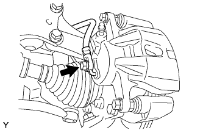
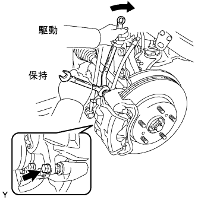
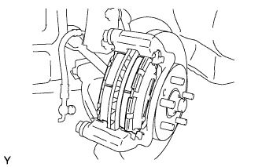
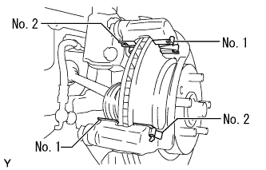
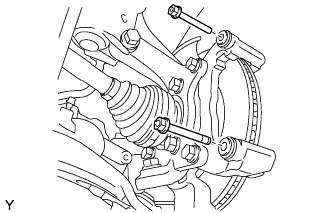
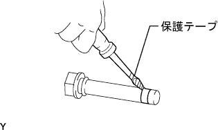
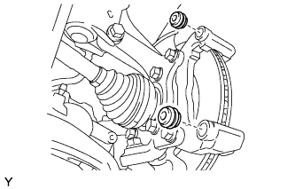
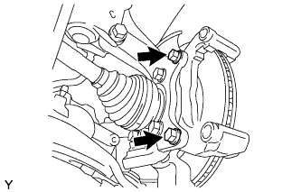
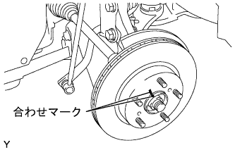

Front Brake Removal |
| 1. Remove Front Tire |
| 2. Drain Brake Fluid |
| 3. Disconnect Front Flexible Hose NO.1 |
 |
Remove the union bolt and gasket, and disconnect front brake flexible hose No.1 from the front disc brake cylinder assembly LH.
| 4. Remove Disc Brake Cylinder Assembly LH |
 |
Hold the slide pin with a wrench, remove the 2 bolts and remove the front disc brake cylinder assembly LH.
| 5. Remove Disc Brake Pad Kit Front |
 |
Remove the front disc brake pads from the front disc brake cylinder mounting LH.
| 6. Remove Anti-squeal Shim Kit Front |
Remove front disc brake anti-squeal shim No.1 and front disc brake anti-squeal shim No.2 from the front disc brake pads.
| 7. Remove Front Disc Brake Pad Support Plate No.1 |
 |
Remove front disc brake pad support plate No.1 from the front disc brake cylinder mounting LH.
| 8. Remove Front Disc Brake Pad Support Plate No.2 |
Remove front disc brake pad support plate No.2 from the front disc brake cylinder mounting LH.
| 9. Remove Front Disc Brake Cylinder Slide Pin |
 |
Remove the front disc brake cylinder slide pins from the front disc brake cylinder mounting LH.
| 10. Remove Front Disc Brake Cylinder Slide Bushing NO.1 |
 |
Using a flat-head screwdriver with its tip wrapped with protective tape, remove front disc brake cylinder slide bushing No.1 from front disc brake cylinder slide pin No.2.
| 11. Remove Front Disc Brake Bushing Dust Boot |
 |
Remove the front disc brake bushing dust boots from the front disc brake cylinder mounting LH.
| 12. Remove Front Disc Brake Cylinder Mounting LH |
 |
Remove the 2 bolts and front disc brake cylinder mounting LH.
| 13. Remove Front Disc |
 |
Put matchmarks on the disc and axle hub, and remove the disc.